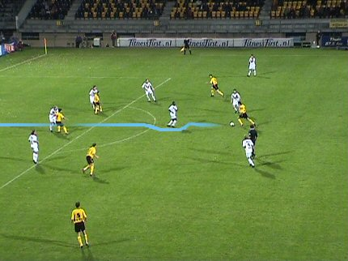
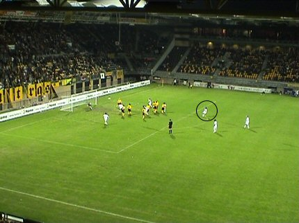

|
Roda JC - Vitesse (3-2) 1 oktober 2005
|
Vitesse kwam met slechts 80 supporters naar Kerkrade.
D'r Versager heeft een dozijn Mach3's gescoord! Gladde jongen....

Filipovic blijft nog even bij Roda. Hier in duel met Vreven.
Wiedemeijer vermaant Vicelich ten onrechte. Flip komt verhaal halen.

Senden kapt eerst Esajas uit.
Vervolgens een hard schot dat van richting wordt veranderd.
Wapenaar duikt hierdoor naar de verkeerde hoek: 1-0, (36').
Roda was sterker dan Vitesse en creëerde een aantal goede kansen zoals
hier waar Derksen vanuit de draai gaat schieten. Helaas te zacht voor de
keeper van Vitesse.
Sergio omspeelt Wapenaar en kan daarna van dichtbij inschieten: 2-0, (40').
Bijna het hele elftal van Roda groepeert zich rond Wiedemeijer als die een
vrije trap toekent aan Vitesse.

De prachtig genomen vrije trap wordt verzilverd door Janssen: 2-1, (49').
De SMS-generatie....
Esajas swingt door de Roda-defensie en drukt af.
Kujovic kan de bal nog
net wegwerken.
Maar vervolgens is Benson er direct bij om de gelijkmaker te scoren. En zo
is het opeens weer spannend: 2-2 (58').
Vitesse dreigt door te drukken. Hier kan Kujovic nog net redden op een
keihard schot van Benson.
Roda herkrijgt zich echter. Hier scoort Oper zijn eerste doelpunt voor Roda.
Het is de bevrijdende 3-2, (73').
Eindelijk kan het zo beproefde Roda-publiek weer eens een zege bejubelen.
Bodnar gaat vijf minuten voor het einde een rode kaart krijgen vanwege
natrappen. Provocateur Swerts die een elleboog uitdeelde, ligt op de grond.
Er lijkt geen einde te komen aan de vier minuten extra tijd waardoor sommige
fans het niet meer harden van de zenuwen.
Drie zeer belangrijke punten kunnen bijgeschreven worden.
Een gedeelte van de 13.000 toeschouwers.
D'r Pe geeft een cursus paaldansen.
Het is een gezellige boel in de Kickoff.
De gasten van vanavond waren Dirk-Jan Derksen en Jerome Colinet.
Nieuw ophaal-personeel in de Kickoff.
Na de Kickoff verlaten te hebben ging het feest verder in de Herjod.
Regillio Vrede wiens hart nog altijd bij Roda ligt was er te gast.
Edrissa Sonko nu ook met Mach3-kapsel.
Na een gezellig en leerzaam onderhoud met diverse spelers en overig
personeel belandden we in het Heerlense Ha-Zus. Wie zou toch die man
met die hoed zijn?
© Koempels Pleasure Dome
|